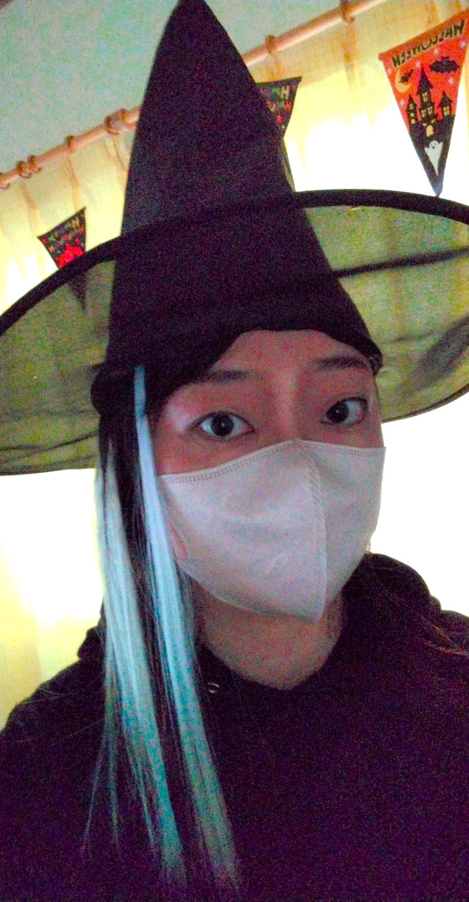

講師紹介
当塾は、コーチングを通じて生徒の「自走する力」を育むプロフェッショナル集団です。

塾長 / ヘッドコーチ
渡部 恵子
「なぜ勉強するのか？」という根本的な問いに向き合い、生徒が自分自身の目標を見つけられるよう、対話を重視したコーチングを行っています。
【経歴・履歴】
地元高校を卒業後、〇〇大学教育学部へ進学。大手塾での教室長経験を経て、「より各家庭に寄り添った教育」を目指し当塾を設立。延べ500名以上のコーチング実績あり。
登録講師のご紹介
専門科目に特化した、経験豊かな講師たちです。

理系科目・英語担当
渡部 千晴
「答え」ではなく「考え方」を教えることをモットーにしています。

英語・小論文担当
佐藤 花子
言葉にする力を磨き、世界を広げるお手伝いをします。